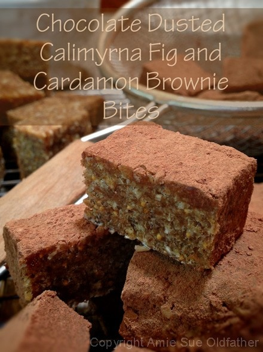
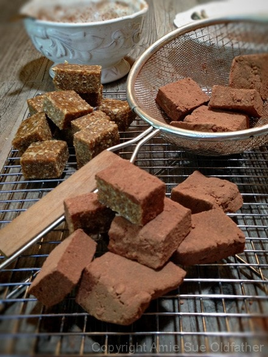

Chocolate Dusted Calimyrna Fig and Cardamom Brownie Bites

~ raw, vegan, gluten-free ~
I love, love, love, love these! But then I love figs and cardamom and together… I doubly love them. Haha Now that I have professed my love… it’s time to get serious! Well, as serious as I can get here, which isn’t very. :)
These are chubby, little brownie bites. About 3/4″ thick and 1″ square. The perfect bite! The flavor balance between the bitter raw cacao (chocolate) that coats the rich, warm flavor and aroma of cardamom, mingles well with the earthy, seedy, texture of the dried figs. Quite remarkable if you ask me… go ahead, ask me! (big cheesy grin) Not doing so well for being serious, now am I?
Ok, (clears throat, here it goes) I always like to look at spices in the eyes of Ayurvedic practices. Though cardamom has many health benefits, today, I wanted to touch on what it can do for the stomach. I am fascinated by the digestive system.
Not only is cardamom delightful and appealing, but it is also highly aromatic. Aromatic spices are a powerful friend to those with a myriad of digestive difficulties, from belching to sluggish digestion. It accelerates the gastric emptying rate, meaning it relaxes the stomach valves that prevent your food from entering the small intestine. It also has been shown to relieve nausea and has been used as an aid in morning sickness.
Ingredients:
yields 36 bites
- 2 cups rolled, gluten-free oats, soaked & dehydrated
- 1 cup almond flour
- 1/2 tsp Himalayan pink salt
- 3/4 tsp ground cardamom
- 2 cups diced dried figs
- 1 cup Medjool dates, pitted
- 1/4 cup coconut oil, melted
- 2 Tbsp raw cacao powder, coating
Preparation:
- In the food processor, fitted with the “S” blade, combine the oat, almond flour, salt, and cardamom. Pulse together.
- With the food processor running, drop in the figs and dates. Then drizzle in the coconut oil. Process until the batter sticks together and starts to form a ball as the blade spins.
- Line a cookie or pan with plastic wrap and press the batter evenly and firmly. I made mine 3/4″ thick. It didn’t fill the cookie sheet, so I just squared up the edges. Place in the fridge or freezer to firm up.
- Remove and cut into small bite-size squares.
- Coat the brownie pieces with cacao powder and shake the excess off.
- Eat right away or store in the fridge for 1 week or in the freezer for 1-2 months.
The Institute of Culinary Ingredients™

Dates are an amazing ingredient for raw food recipes, click (here) to read why.- What is raw cacao powder?
- What is Himalayan pink salt, and does it matter? Click (here) to read more about it.
- Is coconut butter the same as coconut oil? Click (here) to find out.
- Are oats gluten-free? Yes, read more about that (here).
- Are oats raw? Yes, they can be found. Click (here) to learn more.
- Do I need to soak and dehydrate oats? Not required but recommended. Click (here) to see why.